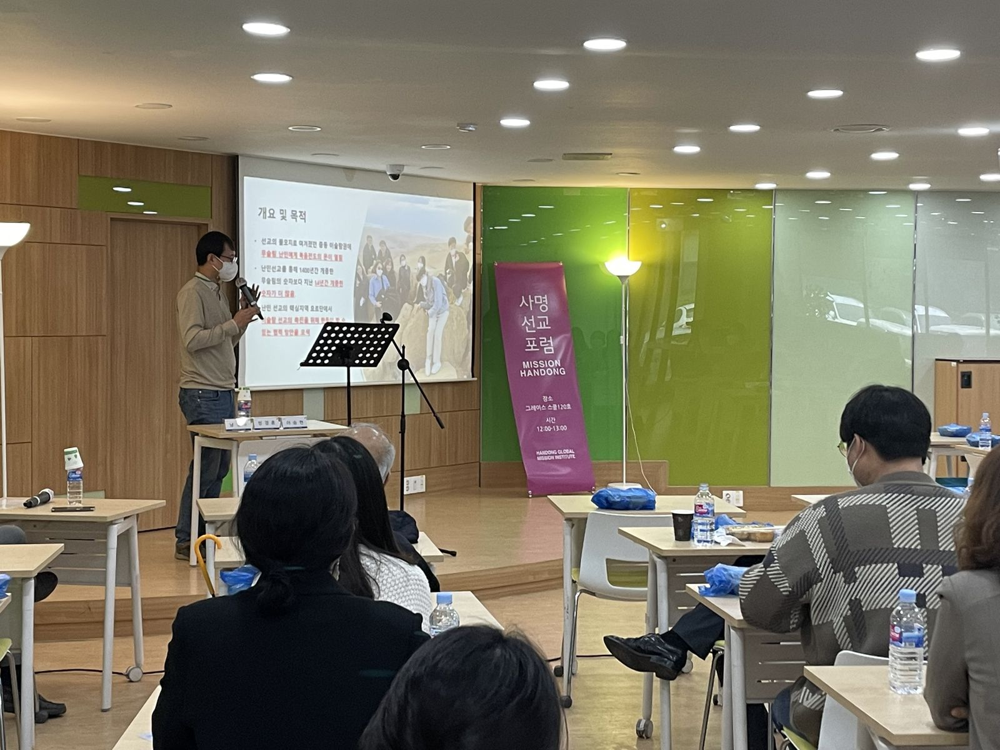
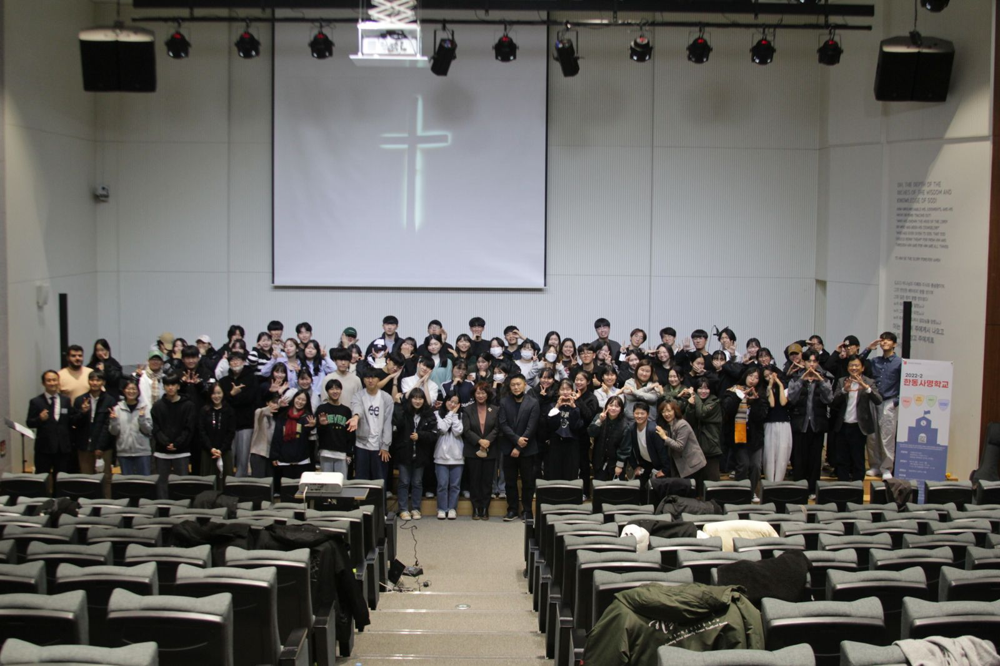
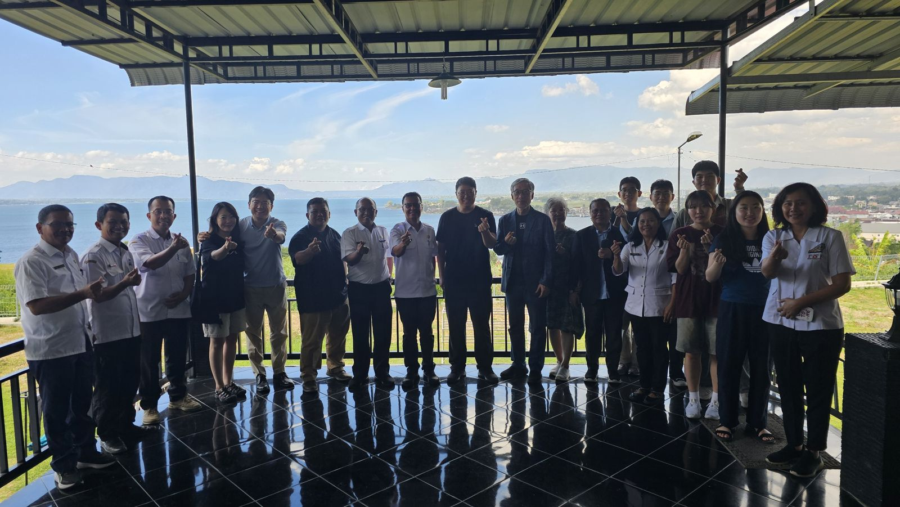

사명선교포럼
Mission Forum
‘전공을 통한 선교’를 주제로 선교 현장의 선교사님과 각 분야 전문가를 초청해 이야기를 나누는 포럼입니다.
- 지난 주제
- 요르단 · 케냐 · 우크라이나 · 쿠바 · 말라위 · 마다가스카르 · NGO와 비즈니스 그리고 선교 (2022)
GMI
함께하는 공간,
함께 자라는 사람들
선교 현장의 이야기를 듣고 함께 기도하며, 하나님이 주신 나의 사명을 발견합니다.

Mission Forum
‘전공을 통한 선교’를 주제로 선교 현장의 선교사님과 각 분야 전문가를 초청해 이야기를 나누는 포럼입니다.
Prayer
한동 전체가 선교의 사명을 품을 수 있도록 함께 모여 기도합니다.
기초 훈련에서 전문 훈련, 현장 훈련까지 단계별로 선교사의 자질을 키웁니다.

Handong Mission School
한동인이 그리스도인의 정체성을 발견하고 영적으로 성장하며, 자신의 전문 영역을 통해 하나님 나라의 확장에 기여하는 삶을 살아가도록 돕는 기초 선교훈련입니다.
Mission Training School
선교를 준비하는 학생들이 함께 배우며 선교사의 자질을 키우는 훈련 과정입니다.
Mission Leadership School
사명을 가진 리더로 세워지도록 돕는 리더십 훈련 과정입니다.
Work + Worship = WORKSHIP
일터에서 말씀을 증명하며 일이 예배가 되는 삶을 배우는 과정입니다. ‘월요일의 바이블’을 주제로 함께했습니다.
글로벌 변혁리더십 프로그램
선교 현장을 직접 찾아가 배우고 섬기며, 한동의 전공을 살려 현지와 협력합니다.

Vision Trip
방학 동안 선교 현장의 교회와 기관을 찾아가 함께 배우고 섬기는 단기 선교입니다.
Global Engagement
선교지와 선교사님의 필요에 따라, 한동의 전공을 살려 맞춤형으로 협력합니다.
Online Education
선교사님의 역량 강화를 위해 전공을 활용한 온라인 교육을 제공합니다.
Refugee & Orphan Education Mission
한동에서 공부하는 국제학생들이 하나님을 만나고, 선교적 삶을 살아가도록 함께합니다.
English Mission School
국제학생과 영어를 쓰는 학생들이 하나님을 만나 자신의 정체성과 참된 목적을 발견하고, 선교적 삶을 살아가도록 돕는 영어 사명학교입니다.
International Students
국제학생이 한동과 한국에서 잘 지낼 수 있도록 돕고, 함께 교제합니다.
프로그램에 관한 소식은 공지사항에서 확인하시거나 GMI로 문의해 주세요.